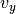

Module estimate_cs_fuvl¶
Estimation of the Choo and Siow 2006 model: in its original version (homoskedastic with singles).
We minimize the  function of Galichon–Salanie (2020, Proposition 5.)
function of Galichon–Salanie (2020, Proposition 5.)
-
estimate_cs_fuvl.estimate_cs_fuvl(muxy: numpy.ndarray, nx: numpy.ndarray, my: numpy.ndarray, bases: numpy.ndarray) → scipy.optimize.optimize.OptimizeResult¶ this estimates the parameters and equilibrium utilities in a semilinear homoskedastic Choo-Siow model.
- Parameters
muxy (np.ndarray) – the numbers of matches in each (x,y) cell, a (X,Y) matrix
nx (np.ndarray) – the numbers of men in each x cell, a X-vector
my (np.ndarray) – the numbers of women in each y cell, a Y-vector
bases (np.ndarray) – the values of the K basis functions in each cell, a (X,Y,K) array
- Returns
a scipy.optimize.OptimizeResult object resus. resus.x has the estimates of , and
 in that order:
in that order:the expected utility of men of type x
 the expected utility of women of type y
the coefficient of basis function k